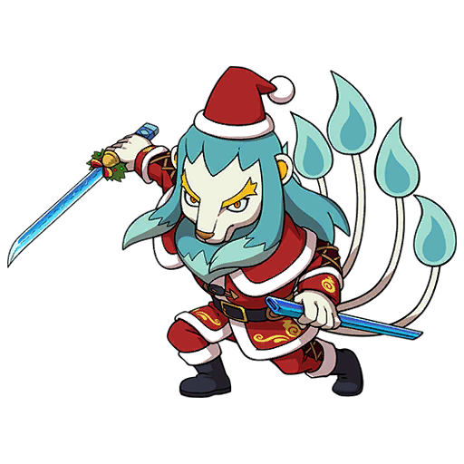
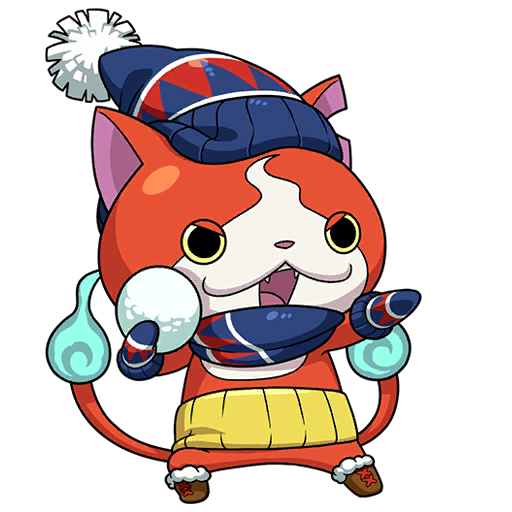
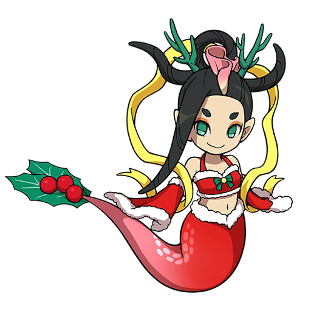

What's new?
Happy Orthodox Christmas!
I planned to make the update to the website way back on 30th December,
I was too afraid at the time because I thought that the update is too small.
After giving it some thought I still have decided to release this update since the website didn't get any in a while.
What's new:
I did overhaul to the databases so now they work more effective and also have new information in them.
This is an important addition as this will help to make much more detailed info on yokai
as well as for the moves and more.
As my way to thank for you reading this, you can access small Yokai creator that I've been working on for some time
by clicking on Jibanyan slightly below.
You can send me the yokai in DM's and I can try to recreate the yokai in the game,
after which you can battle against it.
The list doesn't contain any of boss attacks or any other illegal move
but it does contain everything else. If you're interested in playing
with that yokai yourself then let me know.
This creator is also an example of what I can do in the future with these new Databases.
I might add more features in the future, although they will depend on what people want to see more.
This website is focused on creating tools and providing information to the players
although if you're interested in other things such as RAM editing or some other feature,
feel free to message me about it and I might add it in the next update if it's not too complicated to code in.
Despite facing with some issues time to time, I'm really glad to be in such interesting community
and I hope I will be able to communicate with you all more often!
Below you can see all content that was added before. 
If you have any questions, you can contact me through my discord: @hilwin
Updates:
1.1.0:
• Added Yo-Kai Data, that contains all of Yokai attacks and skills!
• Added two more Wallpapers: "Oh My Swirls! Pattern", "Hearts and Fluff"
• Divided Background into two separate parts
• Added new icons to various pages!
• Fixed various bugs related to IV, GYM and Attitude inputs
• Fixed bug related to techniques not being found in damage calculator
• Added missing Yokai to Yokai Database
1.0.0:
• Added Tier Sheet, showing where each yokai is in the tiers.
• Added moving Wallpapers! (Can be changed in top right corner; See below to see all new Wallpapers)
• New design for Strategy Medallium
• New design for Team Builder, added option to edit Yokai's stats, added Equipment (and Soul Gem) list
• Added search option for some pages
• Added Equipment List page
• Added more fonts (See below for more information)

New Fonts:
• HOT-Bukotsu Std U
• FOT-UDMarugo_LargePr6N-DB
• FOT-Seurat Pro B
• about_friend_v5
New Wallpapers:
•
• 
•
•
•
•
•
•
•
•